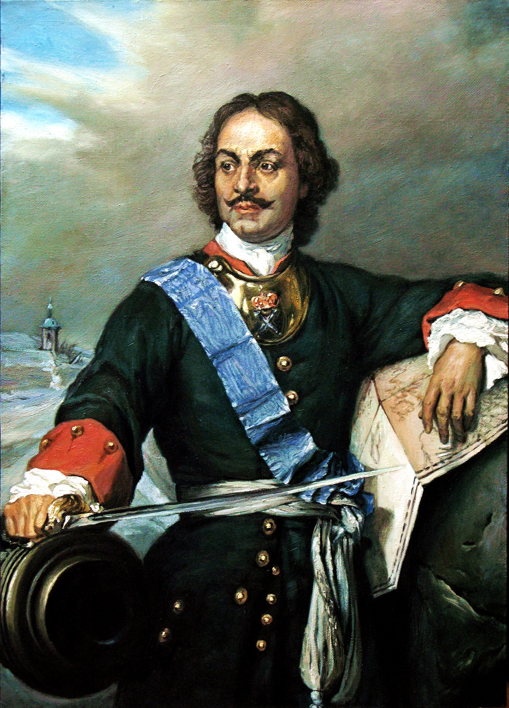

Пётр I Великий — один из самых значимых правителей в истории России. Его правление стало эпохой масштабных реформ, преобразивших страну практически во всех сферах жизни. Главной целью Петра было превращение России в сильное европейское государство, способное конкурировать с ведущими державами того времени.
Во время своего правления Пётр провёл военную реформу, создав регулярную армию и мощный военно-морской флот. Благодаря этим изменениям Россия смогла одержать победу в Северной войне со Швецией и получить выход к Балтийскому морю. Именно после этой победы Россия стала империей, а Пётр получил титул Императора Всероссийского.
Большое внимание Пётр уделял развитию промышленности и экономики. При нём активно строились мануфактуры, заводы, верфи и новые города. Особое значение имело основание Санкт-Петербурга в 1703 году, который стал новой столицей и символом европейского пути развития России.
Пётр реформировал систему государственного управления: были созданы Сенат, коллегии, новая система губерний. Он также изменил положение дворянства, обязав дворян служить государству. Большое значение имели реформы в области образования и культуры — открывались школы, академии, типографии, развивалась наука.
Однако реформы Петра сопровождались высокими налогами, тяжёлым трудом населения и усилением крепостного права. Многие преобразования проводились жёсткими методами, что вызывало недовольство среди народа и бояр.
Несмотря на противоречивость его политики, Пётр I сыграл огромную роль в истории России. Он значительно укрепил государство, расширил его международное влияние и заложил основы дальнейшего развития Российской империи.
